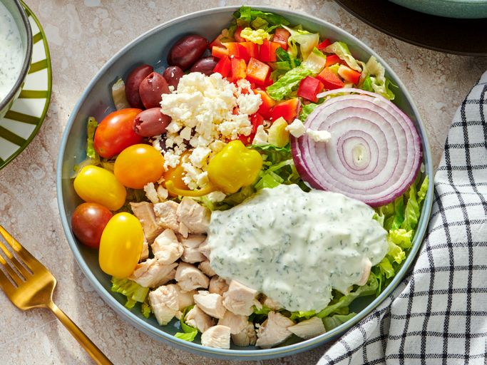

Tzatziki Chicken Bowl

Description
In these tzatziki chicken bowls, Greek flavors combine with cooked
chicken for a meal-in-a-bowl. The homemade tzatziki sauce is
delicious, but you can use purchased, if you prefer.
Ingredients
- 2 cups peeled and grated English cucumber
- 1 teaspoon salt, divided
- 1 teaspoon minced fresh garlic
- 2 teaspoons red wine vinegar
- 2 tablespoons extra-virgin olive oil
- 2 cups plain Greek yoghurt
- 1/4 teaspoon freshly ground black pepper
- 1/3 cup minced fresh dill
- 6 cups thinly sliced Romaine lettuce
- 2 cups chopped cooked chicken
- 24 cherry tomatoes
- 1 cup pitted Kalamata olives
- 1 bell pepper, seeded and chopped
- 4 thin slices red onion
- 4 tablespoons crumbled feta, or to taste
- 4 peperoncini, for garnish (optional)
Steps
- Spread several layers of paper towels on a clean work surface.
Spread grated cucumber on the paper towels, and sprinkle with
1/2 teaspoon salt. Allow to stand about 10 minutes.
- Roll up cucumber inside the paper towels, like a jelly roll.
Squeeze tightly to remove as much liquid as possible. Discard
liquid.
- Place cucumber shreds in a large mixing bowl, and add garlic,
red wine vinegar, and olive oil. Stir, blending well.
- Add Greek yogurt, black pepper, remaining 1/2 teaspoon salt,
and fresh dill. Stir until ingredients are well blended and
refrigerate until ready to serve.
- To assemble the bowls, place 1 1/2 cups thinly sliced Romaine
in each serving bowl. Add 1/2 cup cooked chicken, 6 cherry
tomatoes, 1/4 cup kalamata olives, 1/4 chopped bell pepper, and
1 thin slice red onion to each bowl.
- Top with each bowl with 1 tablespoon crumbled feta, or more,
if desired. Add 1 peperoncini for garnish.
- Stir tzatziki, taste, and adjust seasoning, if needed. Add enough
olive oil to create a pourable sauce; pour over each bowl. Serve
each bowl with 2 or 3 tablespoons tzatziki, or to taste. Store any
unused tzatziki in a sealed container in the refrigerator, 2 to 3
days.
Home